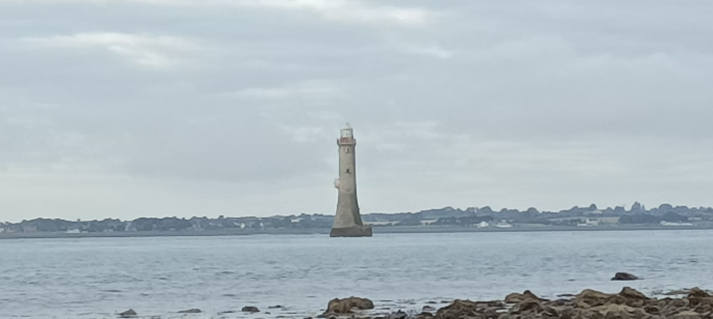
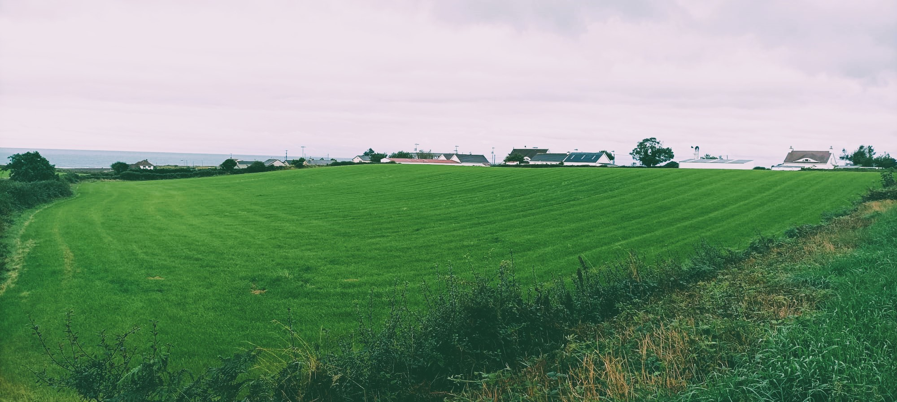
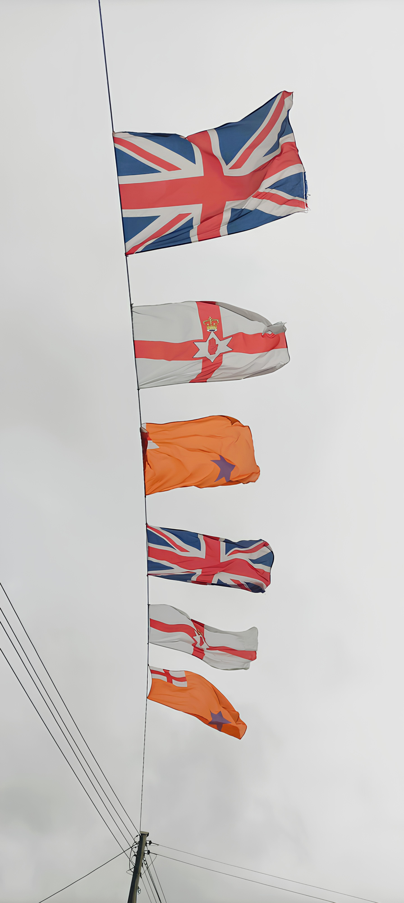
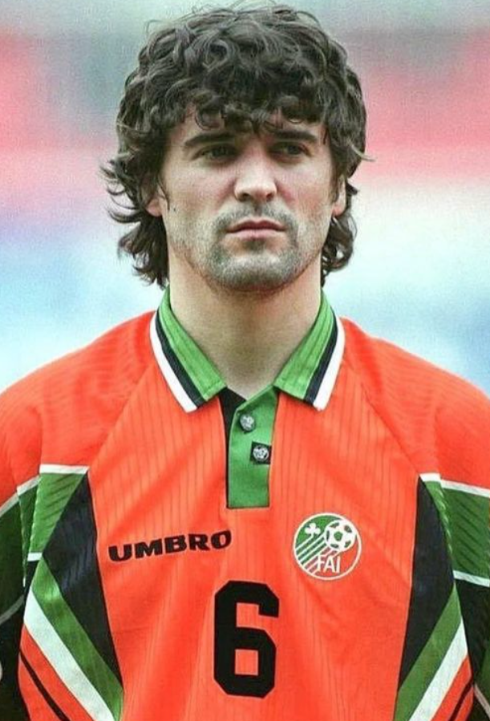
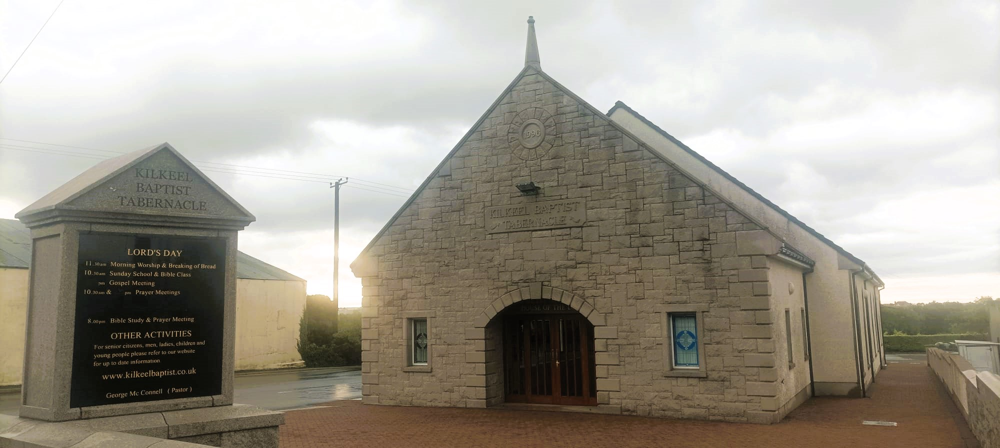
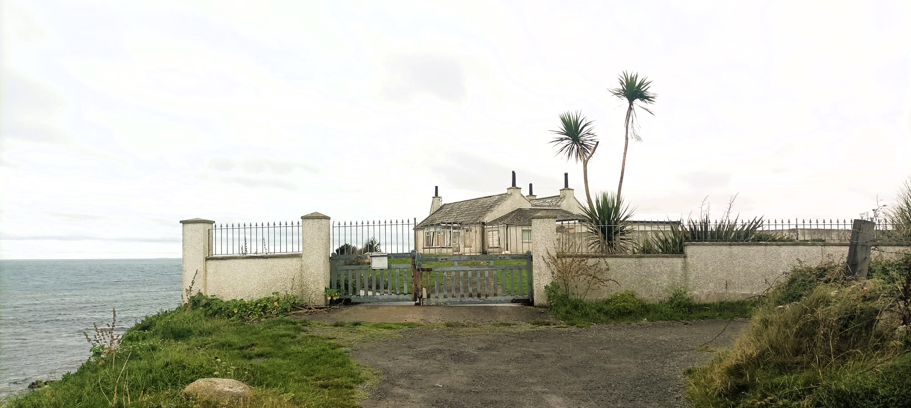
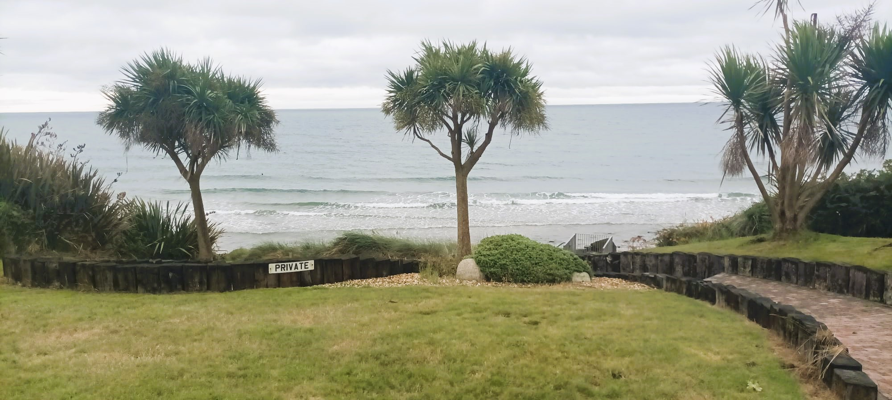
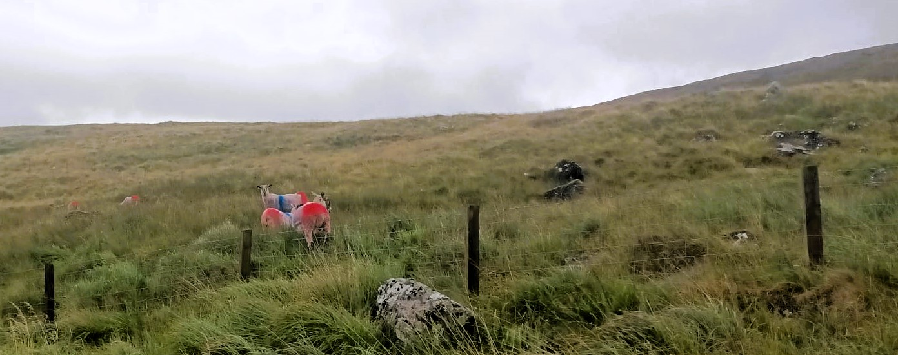

11 Haulbowline (Carlingford Lough)

Monday, July 31, 2023, 0605
This trip will be a tight turnaround so I get to bed early and set my alarm for 515am. But when I wake up I look at the forecast and it’s even worse than I had expected, so I piss away half an hour in bed telling myself that it’s not a good day to go, that I’d be better off just getting my work work done today, seeing as it is actually a Monday?. Our accommodation is up in the low clouds and the Mourne Mountains in the distance look even more ominous than usual. But eventually I see a ball of sunlight rising from the sea and it lifts my mood because of course the weather will be better at the sunrise coast than up here in the Dromora Hills, twenty clicks inland, three hundred metres above sea level. So I decide to stop being a sofcack and just do it. I grab my fluff-lined anorak which will keep off the rain and wind and cold, even if I’ll be sweating like a knacker doing maths. I make myself halfa pinta bogger coffee and grab a bowl of crappy-ass cereal, then I jump into the Boola Jammer cos I’ve got everything prepped already, knowing that this will be a hit-and-run job before checking out of our mobile home Airbnb at lunchtime.

I drive twenty minutes to Newcastle, a pretty but commercialised seaside town which lies low between a stonysand beach and the blackbreasted High Mournes. I’m heading south, back towards Carlingford Lough, where the beautiful Haulbowline Lighthouse sits on a small patch of rocks which may or may not be in the fcUK,. There are two ways to get there. Both of them are nineteen miles, local money, which translates to eighty Google Minutes along the Mourne Coastal route, or two Google Hours up and down over the Mourne Mountains which I really want to see. Ideally I’d get that hard part done first and saunter home along the coast, but I’m in a bit of rush, between checkout and having a job and a family, so I decide to just get there asap and see if I have time for the scenic route home. Plus the weather is mingin in the mountains while it’s only meh along the coast, so the lesser of two miserables wins out. The sea does look resplendent to the North-ish East, whence the sun is rising and you can see the whole bay, a huge sweeping concave arc that terminates at St John’s Point lighthouse. It’s a shame I’m cycling away from heaven, and chasing towards hell, with black clouds bouncing black light off greygreen fields, and the only naturally occurring colours are the blue and red flags welcoming me to the settlements that break up the journey.

The Mourne Coastal Route is not the serene road I had hoped for and, seeing as this is the only flat road south of Newcastle, plenty of traffic whizzes past me, even at this hour. There clearly hasn’t been a major ad campaign telling motorists to give cyclists at least 1.5m of space when passing. At first the road is properly coastal, cut across the slope of the hills, with a low strip of land to my left and steep fields to my right, dotted with holiday homes and B&Bs. The coastline is hard to appreciate though because the land is convex so you only ever have a few degrees of vision and if the current point of view is subpar, which it mostly is in this weather, then your eye can’t just shift to the next spot to hunt out beauty. Eventually the mountains subside and the road switches slightly inland, leaving a thicker strip of flat land for holiday homes and the green, green grass of home.
11.0.1 Annalong

At the holiday village of Annalong, I am welcomed overhead by multiple flegs, marking out territory. We’ve got union jacks, Ulster jacks and Orange Order jacks. A sign on a lamppost advertises a drive-in Gospel Meetings, possibly making sure that the holidaymakers can still access their peculiar sect of Christianity in the absence of a physical church. It’s astonishing how many different forms of Christianity there are in Ulster, and the Hillbillies in the Deep South didn’t lick it up off the floor. About a fifth of all Protestants are neither Church of Ireland nor Presbo. In front of the Presbyterian Church a permanent-looking billboard straddles the road, commemorating the Battle of the Boyne of 1690 in which the Catholic Jacobites were defeated by the William, the Protestant King of England, Ireland, Scotland and Stadtholder of various Dutch regions. He was also the Prince of Orange, an a small region in the south-east of France with a large visual imprint on the world.
11.0.2 “Southern” Ireland v (North) Macedonia

The colour orange has since then been associated with Protestant communities and it lives on in the Irish Flag as well as the sporting colours of modern-day Netherlands, and the Orange Free State in South Africa. I was curious to know where the colour orange came from and it turns out that it was actually based on a rebus, a pun of sorts. Orange is an area in the South of France whose historic name is actually Arausio, which later became Auranche and eventually Orange. The town name was conflated with the fruit whose name spread to Europe from the East, in a trail of remarkably similar forms:
German orange,
Dutch oranje,
Italian arancione,
Bulgarian Oranzhev Оранжев,
Farsi Narenji ارنجی,
Hindi Narangi – नारंगी
Meanwhile, there is a tradition of adopting coats of arms which make visual puns relating to the name, a practice called canting. Thus the colour orange was attached to the House of Orange and it has since emblazoned its territories. Irish sporting teams mostly dodge the colour, except as decorative trimming, but it was wheeled out in 1997, by the Republic of Ireland’s soccer team, who had been world class for a decade. Yet they ended up losing to the fledgling state of Macedonia, with Jason McAteer being sent off for an outrageous karate kick, and the colour orange was never used again (almost).
11.1 Ballymartin, Kilkeel

Local oddities continue as I make my way to the small Catholic village of Ballymartin and then the sizeable Protestant town of Kilkeel. Facilities are mostly between the main road and the sea, with Ballymartin’s pitches being for Gaelic Football and Kilkeel’s for Association. I don’t quite grasp where one begins and the other ends, and I’m surprised to see a billboard in Kilkeel advertising Gaelscoil Chill Chaoil. Why would a Protestant town have an Irish-speaking school? Looking at the data, however, it seems that this is a Protestant stronghold in a largely Catholic part of the county, so they students might simply be converging in the town. It’s very exciting to see the Irish language movement progressing in Northern Ireland, and even among a few people of British stock. I remember Warren Maguire, my lecturer in Edinburgh who taught me about Scots and Scottish English, always wanting to learn Donegal Irish cos he was from Tyrone.
My gut wants to track the coast so I turn left before reaching Kilkeel’s town centre and end up at the sizeable harbour where I chuck a few questions at a teenage boy out fishing on slash off the pier. He tells me what he’s hoping to catch today and ask whether I can see the lighthouse from Greencastle. He gets very enthused and tells me all about the fish you can catch round there, perhaps expecting I will be pulling a fold-up fishing rod out of my back pocket. On my way back up, the flegs are back out and they guide me out of the town, towards the peninsular quietness of the southernmost point of Northern Ireland.
It was only later in the day, when driving to the ferry, that I discovered the town centre was chockerblock with flags and I’m raging I don’t have time to explore more. I don’t know if the decoration is just up for The Twelfth – Paddy’s day for Prods – or if they are a permofeatch. I’ve always wanted to come up North on July 12, if they’d have me, cos I’d just love to see that the Jacques Chirac is. I’ve seen some whopper street parties and raves going on in the cities, and basically just thousands of Irish people out having a buzz, except with a different colour scheme. The worry, of course, is that there won’t have been enough bangers to go round.

It’s a few clicks of farmland out to Cranfield Point, which is the southernmost tip of Northern Ireland, and the closest point on the map to the Haulbowline lighthouse. This is where the Irish Sea meets Carlingford Lough and there is a beach on either shore, separated by a small rocky headland upon which sits the old lighthouse keepers’ cottage. An earlier lighthouse was placed near here, offering scant help to mariners looking to avoid the submerged rocks known as Little Hawl Bowling, fully 700m away, nearer the middle of the lough. That lighthouse has since collapsed, possibly into the sea, as it looks like the waves have been nibbling away at this coastline for some time, leaving a short but precipitous drop from the road to the stony beach below. The cottage is bedraggled and semi-abandoned, although I can imagine an ageing alcoholic spluttering on with this building for shelter. Wake up, milk the cows, hit the bottle. The cottage housed the lighthouse keepers from 1824, when the Haulbowline lighthouse was built, until 1922 when they moved to Greencastle nearby, where the ferry departs, and where I’m going next for a better view of the lighthouse.1 It is hard to view it from here because the house is in the way, the gate is locked and, even if it weren’t, there are cattle grazing on its grounds, so I leave them at it.
The lighthouse is much closer to the northern side of Carlingford Lough, but the closest you can get on foot is about 500 metres away, when the tide is out. I got there a few weeks later when I brought my family camping in Sandilands Holiday Park, about a kilometre north of Cranfield Point. Curiosity forced me to see more of this bizarre but beautiful building which is my favourite lighthouse thus far. The lighthouse stands erect and alone on the water like an unmanned dildo. It is not quite a perfect column as it tapers slightly from the base before straightening up and the light room on top looks like a graceful cap rather than an affront to the building’s columnar perfection. I was surprised to find out that it was designed by George Halpin as it is so different in shape to others, but I suppose he must have known what was needed for an offshore lighthouse. The architect Tom Nancollas writes eloquently about the building, in his book Seashaken Houses, about rock lighthouses around Britain and Ireland. He got a lift over with the lighthouse technician and spent three hours exploring the structure’s hollowed out insides, sniffing out clues from what remains scattered around. Perhaps the most interesting of all, for those of us not up to speed with Oriental influences on Victorian interiors, is that an exorcism seems to have been performed on the building in 1957. The lighthouse keepers had been complaining about various eerie noises and movements, so the Parish Priest of Kilkeel was ferried over to consecrate the edifice. Juxtaposed beside this anecdote is an account of the 97 men who died on Carlingford Lough in 1916 after two steamships collided, and only one man survived. Nancollas imagines the harrowing experiences of the lighthouse keeper watching this tragedy unfold while watching helplessly from the eye of the storm.

Cranfield point has a dozen or so houses perched over its stony, eastward beach, meaning you can wake up and rinse off in the waves while the kettle boils. This place is a reminder of where and how I really want to live. Many of the houses have a little locked gate and steps down to the beach. One house has a tidy micro-piazza for soaking up the views, complete with palm trees for the faux tropical vibe. I once kipped on a beach hut in Thailand and had like four swims per day. You’d be in the water before brushing your teeth. It’s one thing to live near the sea, like my mam in Clontarf, walking a kilometre down to the Bull Wall for her daily swim at high tide. It’s altogether different when the sea is your front basically garden. I’m gaggo to get in and cool off but I haven’t seen any non-private access points to the long, stony beach. I double back and find a scrappy path down at the unpopulated end of the road. I was going to bring my togs with me but decided they were too much bulk, thinking you never get to swim beside scary-ass lighthouses. But I did see one woman having her morning swim so I’m guessing it’s somewhat safe. I decide to go full Buck Mulligan and I undress as close to the water as I can, thinking of any gawking locals with their drive-through Gospel readings, before plunging into the undulating saltbath, and washing off all of my bicycle skronk. My ability to stay in water never matches my enthusiasm, but I’ve learnt to get over my scarlification and I’m in and out in a flash. I had planned on drying myself with the fluffy inside of my coat, as I often do after my son declares an unplanned swim, but I decide against it as I’d be freezing my actual tits off after, so I have to make do with the sweaty polo shirt I’ve been wearing. Afterwards I put on a nice clean cycling jersey which I did shove in a pocket, and now I’m feeling brand new.
I leave Cranfield Point and turn left for Greencastle, following the signs for the Carlingford Ferry which goes across to Greenore Port. From the harbour I can see the lighthouse, distant but clear now. There’s a handful of sea creatures used to guide the ferry back and forth to Greenore, and a sparsely populated port for parking, pissing, and possibly purchasing tickets. Waiting alone in lane 1 is a family of Plastic Paddies, on tour in County Down for the week, and taking the Lee Scratch over to a kids adventure park on a bit of the Louth coast I missed. They tell me the ferry is twenty nicker one-way for a Jammer, on the hour every hour, and I resolve to bring the family back home this way rather than via the boring old motorway. Maybe get a closer view of the lighthouse too. The healthy-looking grandfather tells me his dad is from Tallaght-when-it-was-a-village, and his mam is from somewhere less memorable, although from his diction alone it’s clear no one here is descended from Tallaght-when-it-was-the-joyriding-capital-of-Ireland. He knows his Ireland and he pings me for suggesting that Down is more beautifual than the Dublin-Wicklow continuum. Soon enough we’re talking about Heffo’s Dubs and the rare aul’ times, and I find myself reminiscing on when it was all just fields out my way in south-west County Dublin. I’d love to stay and ask him about growing up in the south of England with Irish parents, but it’s 915am now and I have to hit the proverbial.

The wind in the barren Mourne Mountains is fierce and even the downhill bits are a slog. I pull over in Atticall – The Heart of the Mournes – to fix my bike and dirty my fingers then I’m back at it, driving into the breeze. The hills are shallow and wide with long grass and sheep dipped in British Colours. As I’m taking snaps of Slieve Muck, I see that I have just 700 feet of climbing to go, followed by 1200 feet of descending, and the thought of a long downhill victory parade keeps me going through this barren expanse. Back in Newcastle, along the promenade, I dress beside my parked car, but this time my togs fly away in the wind, never to be seen again, so I have to swim in my poor cycling shorts. There’s no one else swimming, and I don’t like the pull of the retreating water so I just sit down and literally bathe. It helps to reduce my hashtag core body temperature, although afterwards I can still feel the seawater evaporate off my overheated torso. Some passers-by claim I’m a mad yoke swimming in this weather but it’s not cold at all, just pissy, and I resolve to swim at some point on every one of these lighthouse journeys.